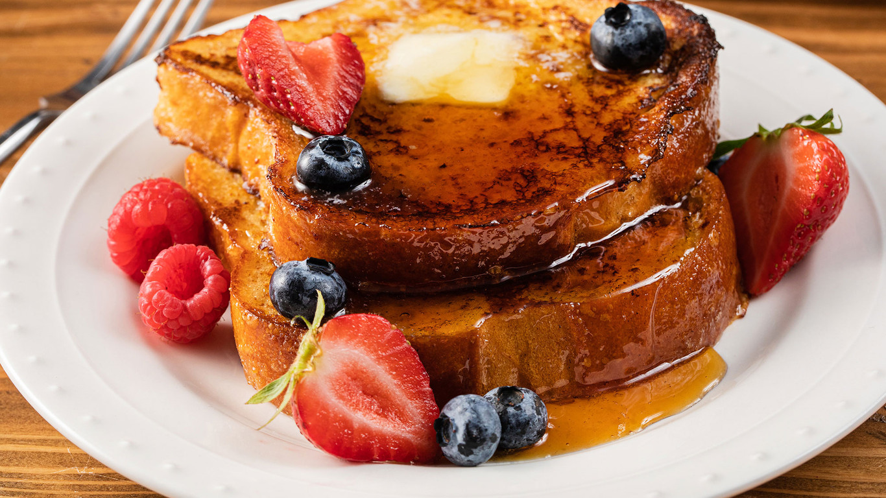

French toast

Description
This is yet another easy and quick way you can start your morning. This meal is simple and can be implemented
with multiple toppings just like protein pancakes.
Nutrients of this meal are: 95 kcal, 3g fat, 13g carbs, 4g protein.
Ingredients
- 1 egg
- 1 tbsp vanilla extract
- pinch of cinnamon
- 1/4 cup milk
- 4 slices bread
- Topping of your choice (maple syrup and some fruits are recommended)
Preparation
- Beat egg, vanilla and cinnamon in shallow dish with wire whisk. Stir in milk.
- Dip bread in egg mixture, turning to coat both sides evenly
- Preheat the greased nonstick griddle and keep it on medium heat
- Cook until bread is brown on both sides
- Serve with a topping of your choice and enjoy!